Shrunk linear transformation
2015-10-20
Last updated: 2015-11-11
Code version: 48d0a820ba6794f241a52faf89a214afeba506d9
library("biomaRt")
library("data.table")
library("dplyr")
library("limma")
library("edgeR")
library("ggplot2")
library("grid")
#library("cowplot")
theme_set(theme_bw(base_size = 12))
source("functions.R")
source("../code/multitask_regression/multitask_regression.R")
require(doMC)
registerDoMC(7)Load data
anno=read.table("../data/annotation.txt",header=T,stringsAsFactors=F)
quality_single_cells <- scan("../data/quality-single-cells.txt",
what = "character")
anno_filter <- anno %>% filter(sample_id %in% quality_single_cells)
molecules_cpm_ercc = fread( "../data/molecules-cpm-ercc.txt", header = TRUE,
stringsAsFactors = FALSE)
setDF(molecules_cpm_ercc)
rownames(molecules_cpm_ercc)=molecules_cpm_ercc$V1
molecules_cpm_ercc$V1=NULL
molecules_cpm_ercc=as.matrix(molecules_cpm_ercc)
molecules_cpm = fread( "../data/molecules-cpm.txt", header = TRUE,
stringsAsFactors = FALSE)
setDF(molecules_cpm)
rownames(molecules_cpm)=molecules_cpm$V1
molecules_cpm$V1=NULL
molecules_cpm=as.matrix(molecules_cpm)
ercc <- read.table("../data/expected-ercc-molecules.txt", header = TRUE,
stringsAsFactors = FALSE)
head(ercc) id conc_mix1 ercc_molecules_well
1 ERCC-00130 30000.000 4877.93485
2 ERCC-00004 7500.000 1219.48371
3 ERCC-00136 1875.000 304.87093
4 ERCC-00108 937.500 152.43546
5 ERCC-00116 468.750 76.21773
6 ERCC-00092 234.375 38.10887cbPalette <- c("#999999", "#E69F00", "#56B4E9", "#009E73", "#F0E442", "#0072B2", "#D55E00", "#CC79A7")Linear transformation with ERCC controls
First let’s repeat John’s linear transformation.
We need to filter the 92 ERCC genes to only include those that passed the expression filters.
ercc <- ercc[ercc$id %in% rownames(molecules_cpm_ercc), ]
ercc <- ercc[order(ercc$id), ]
stopifnot(ercc$id == rownames(molecules_cpm_ercc))Because the molecule counts have been converted to log2 cpm, we also convert the expected ERCC molecule counts to log2 cpm.
ercc$log2_cpm <- cpm(ercc$ercc_molecules_well, log = TRUE)We perform the linear transformation per single cell.
molecules_cpm_trans <- molecules_cpm
molecules_cpm_trans[, ] <- NA
intercept <- numeric(length = ncol(molecules_cpm_trans))
slope <- numeric(length = ncol(molecules_cpm_trans))
for (i in 1:ncol(molecules_cpm_trans)) {
fit <- lm(molecules_cpm_ercc[, i] ~ ercc$log2_cpm)
intercept[i] <- fit$coefficients[1]
slope[i] <- fit$coefficients[2]
# Y = mX + b -> X = (Y - b) / m
molecules_cpm_trans[, i] <- (molecules_cpm[, i] - intercept[i]) / slope[i]
}
stopifnot(!is.na(molecules_cpm_trans))Here is a visualization of what happened using the first single cell
plotTransform <- function(ind,...) {
plot(ercc$log2_cpm, molecules_cpm_ercc[, ind],
xlab = "Expected log2 cpm", ylab = "Observed log2 cpm",
...)
abline(intercept[ind], slope[ind])
points(molecules_cpm_trans[, ind], molecules_cpm[, ind], col = "red")
}
plotTransform(1,main = "Example linear transformation - endogenous genes in red")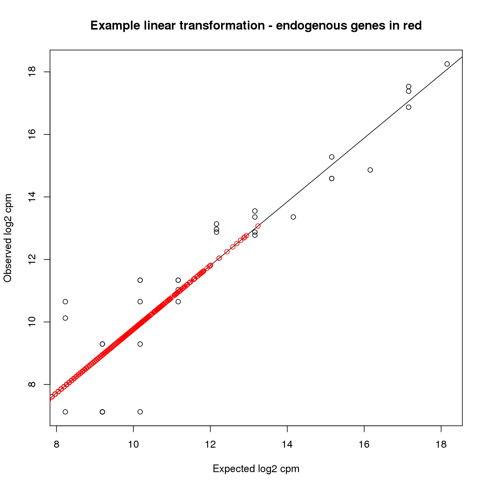
and then the most outlying intercepts and slopes.
par(mfrow=c(2,2))
plotTransform(which.min(intercept), main = "Smallest intercept")
plotTransform(which.max(intercept), main = "Largest intercept")
plotTransform(which.min(slope), main = "Smallest slope")
plotTransform(which.max(slope), main = "Largest slope")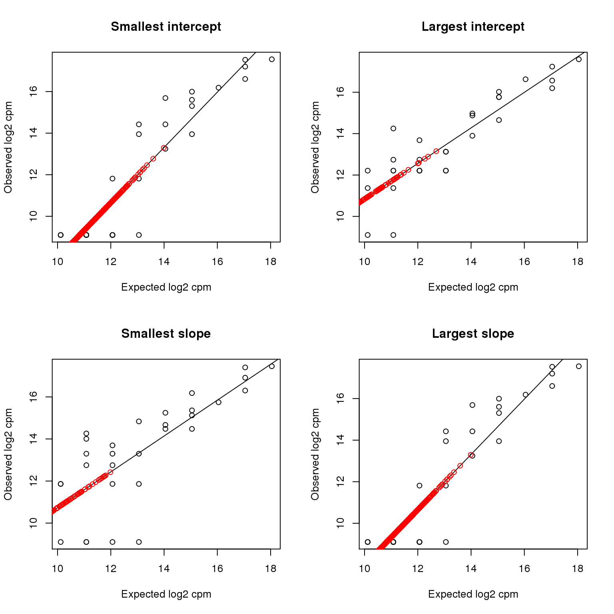
par(mfrow=c(1,1))The transformed data vs. the raw data:
ggplot(data.frame(x=as.numeric(molecules_cpm),y=as.numeric(molecules_cpm_trans)),aes(x,y)) + stat_binhex()+scale_fill_gradientn(colours=c("white","blue"),name = "Frequency",na.value=NA) + xlab("raw") + ylab("transformed") + geom_abline(intercept=0,slope=1) + stat_smooth(method="lm")
Shrunk linear transformation
Within each batch we fit the linear transformation jointly, shrinking using a learnt prior. The per cell linear regression is
ycn = βcxnc + μc + ϵcn
where ycn is the log cpm for ERCC n in cell c, β is the slope, μ is the intercept, and
ϵcn ∼ N(0, σ2)
is noise (currently I assume the same noise variance in each cell). For notational convenience let $\tilde{\beta}_c = [ \beta_c, \mu_c ]^T$ and $\tilde{x}_{nc} = [ x_{nc}, 1 ]^T$, then
$$ y_{cn} = \tilde{\beta}_c \tilde{x}_{nc} + \epsilon_{cn} $$
We put a bivariate normal prior on $\tilde{\beta}$, i.e.
$$ \tilde{\beta} \sim N( m, S )$$
where m is the shared transformation coefficients across the batch, and the covariance matrix S controls the spread around that mean. Integrating over ϵ and $\tilde{\beta}$ we have
$$ y_{c:} \sim N(m^T \tilde{x}_{:c}, \tilde{x}_{:c}^T S \tilde{x}_{:c} + \sigma^2 I_{N\times N} ) $$
Numerical optimization (LBFGS) is used to get maximum likelihood estimates of m, S and σ2. Given these estimates, the posterior expectation of $\tilde{\beta}_c$ is
$$ \mathbb{E}[\beta_c] = ( S^{-1} + \tilde{x}_{:c}^T \tilde{x}_{:c}/\sigma^2 )^{-1} (S^{-1}m + \tilde{x}_{:c}^T y_{cn}/\sigma^2) $$
This expected value is then used to linearly transform the real gene cpm values, as before.
This takes a little while (5 minutes-ish on my laptop).
intercept_shrunk <- numeric(length = ncol(molecules_cpm))
slope_shrunk <- numeric(length = ncol(molecules_cpm))
batches <- unique(anno_filter$batch)
for (batch in batches) {
cellsInBatch <- which(anno_filter$batch==batch)
y <- lapply( as.list(cellsInBatch), function(i) molecules_cpm_ercc[, i] )
x <- lapply( as.list(cellsInBatch), function(i) cbind(1,ercc$log2_cpm) )
sink("temp.txt") # this outputs a lot of uninteresting stuff, so sink it
fit <- foreach(j=1:5) %do% multitask_regression(x,y)
sink()
fit_best <- fit[[ which.max(unlist(lapply(fit,function(g) g$value))) ]]
intercept_shrunk[ cellsInBatch ] <- fit_best$par$coeffs[1,]
slope_shrunk[ cellsInBatch ] <- fit_best$par$coeffs[2,]
}
molecules_cpm_trans_shrunk <- sweep( sweep( molecules_cpm, 2, intercept_shrunk, "-"), 2, slope_shrunk, "/" )
write.table(molecules_cpm_trans_shrunk, "../data/molecules-cpm-trans-shrunk.txt",
quote = FALSE, sep = "\t", col.names = NA)Here is a visualization of what happened using the first single cell as an example.
plotTransform <- function(ind) {
plot(ercc$log2_cpm, molecules_cpm_ercc[, ind],
xlab = "Expected log2 cpm", ylab = "Observed log2 cpm",
main = "Example linear transformation - endogenous genes in red")
abline(intercept_shrunk[ind], slope_shrunk[ind])
points(molecules_cpm_trans_shrunk[, ind], molecules_cpm[, ind], col = "red")
}
plotTransform(1)
Compare the intercepts and slopes with and without shrinkage: you can see shrinkage pulls the estimates towards the mean for the experiment.
transformation_intercepts <- rbind( data.frame( intercept=intercept, shrinkage=F, batch=anno_filter$batch ), data.frame( intercept=intercept_shrunk, shrinkage=T, batch=anno_filter$batch ) )
ggplot(transformation_intercepts, aes(batch, intercept, col=shrinkage)) + geom_boxplot() + theme_bw(base_size = 16) + theme(axis.text.x = element_text(angle = 90, hjust = 1)) + scale_colour_manual(values=cbPalette)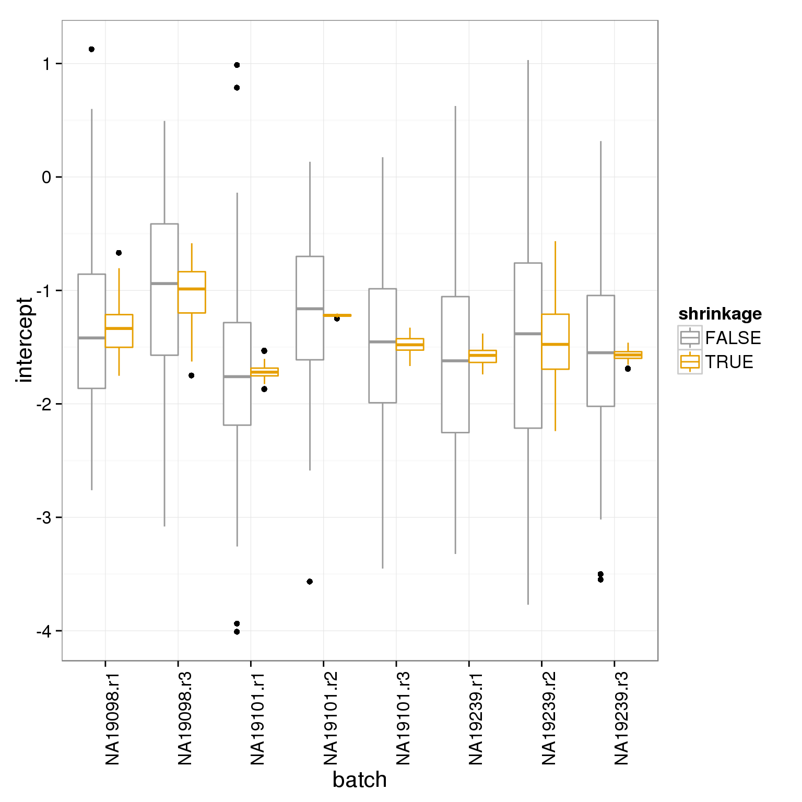
transformation_slopes <- rbind( data.frame( slope=slope, shrinkage=F, batch=anno_filter$batch ), data.frame( slope=slope_shrunk, shrinkage=T, batch=anno_filter$batch ) )
ggplot(transformation_slopes, aes(batch, slope, col=shrinkage)) + geom_boxplot() + theme_bw(base_size = 16) + theme(axis.text.x = element_text(angle = 90, hjust = 1)) + scale_colour_manual(values=cbPalette)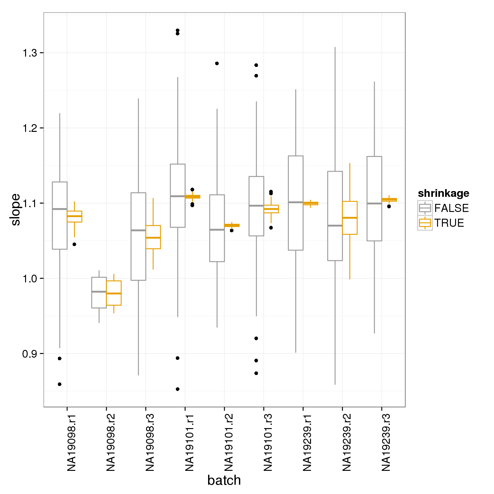
PCA of raw cpms, transformed and shrunk transform.
make_pca_plot <- function(x) {
pca_res <- run_pca(x)
plot_pca(pca_res$PCs, explained = pca_res$explained,
metadata = anno_filter, color = "individual",
shape = "replicate")
}
cpm_mats <- list( raw=molecules_cpm, transform=molecules_cpm_trans, shrunk_transform=molecules_cpm_trans_shrunk)
foreach(n=names(cpm_mats)) %do%
{ make_pca_plot(cpm_mats[[n]]) + labs(title=paste0("PCA (",n,")")) + scale_colour_manual(values=cbPalette) }[[1]]
[[2]]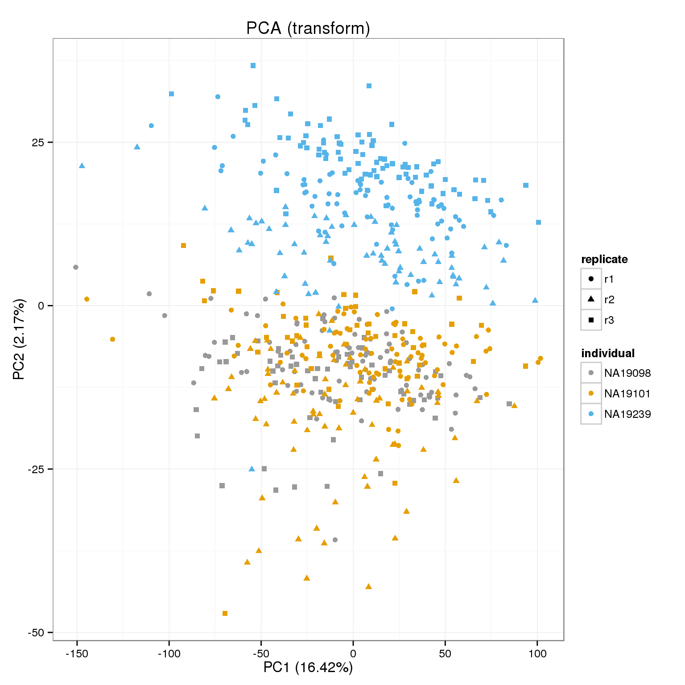
[[3]]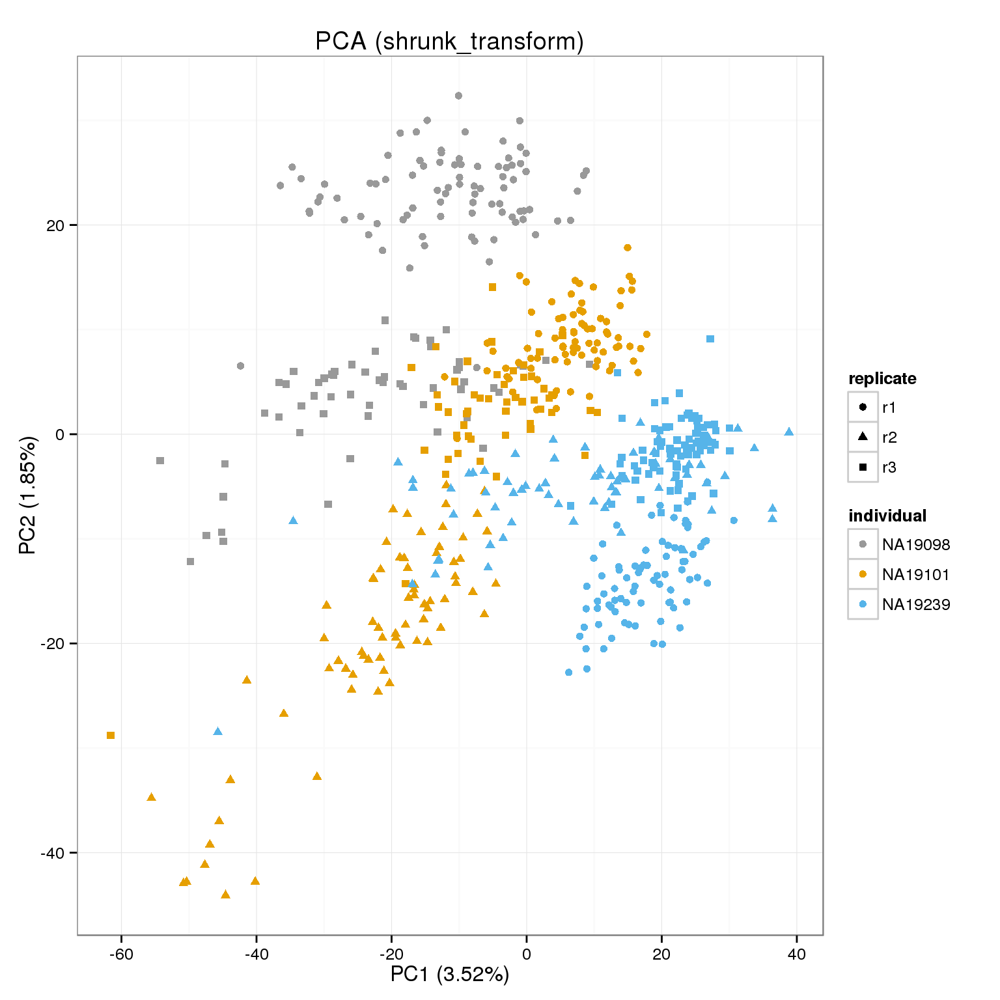
ANOVA for batch and individual effects
Next look at whether the batch and individual effects are more or less significant under the different normalization approaches using a per gene ANOVA.
anovas <- lapply(cpm_mats, function(x) {
foreach(i=1:nrow(x)) %dopar% anova(lm(x[i,] ~ anno_filter$replicate + anno_filter$individual))
})First let’s look at the proportion of variance explained by batch or individual across genes using the different normalizations.
variance_components <- lapply( as.list(names(anovas)), function(name) {
ss=do.call(rbind,foreach(a=anovas[[name]]) %do% a[,"Sum Sq"] )
colnames(ss)=c("batch","individual","residual")
data.frame(sweep(ss,1,rowSums(ss),"/"), method=name)
} )
names(variance_components)=names(cpm_mats)
ggplot( do.call(rbind,variance_components), aes(batch, individual, col=method)) + geom_point() + theme_bw(base_size = 16) + labs(title="Variance proportions")+ scale_colour_manual(values=cbPalette)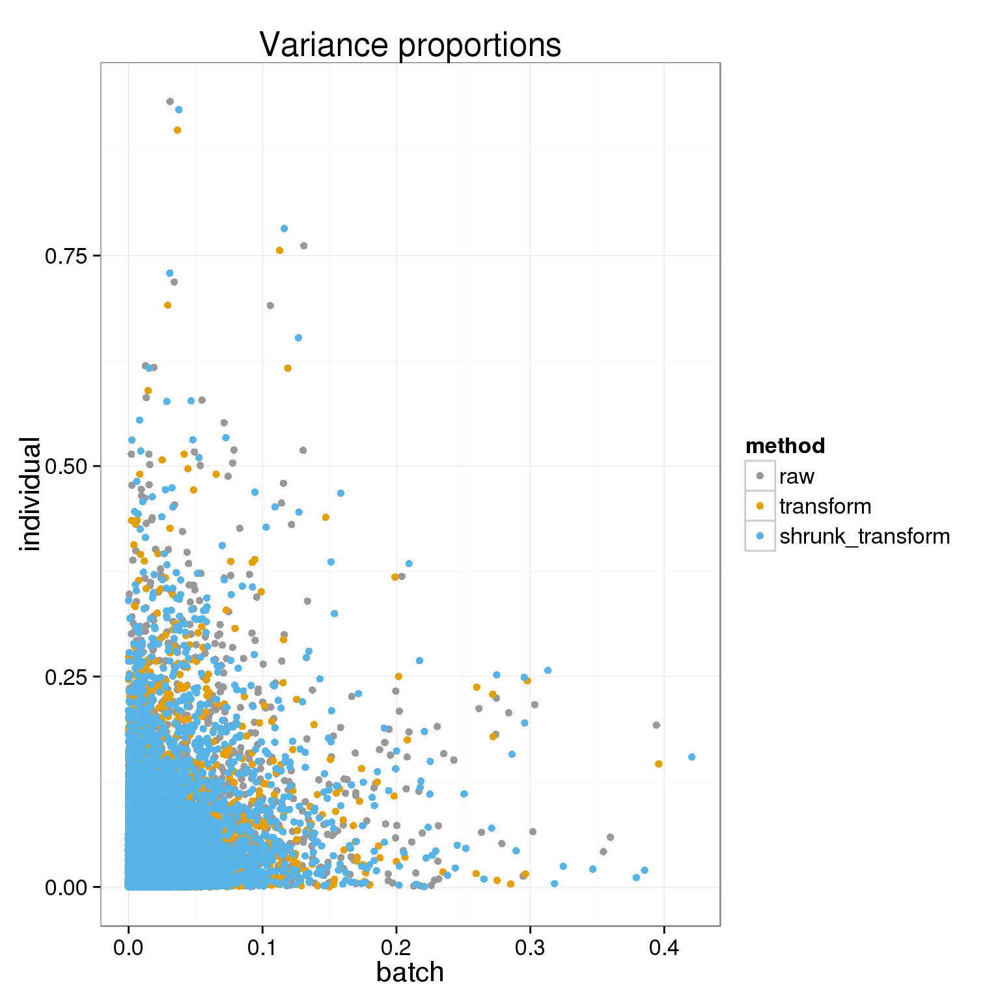
Another way to look at this is with the ANOVA p-values
anova_pvals <- lapply( as.list(names(anovas)), function(name) {
ps=do.call(rbind,foreach(a=anovas[[name]]) %do% a[,"Pr(>F)"] )
colnames(ps)=c("batch","individual","residual")
data.frame(ps, method=name)
} )
names(anova_pvals)=names(anovas)
ggplot( do.call( rbind, anova_pvals ), aes(-log10(batch), -log10(individual), col=method)) + geom_point() + theme_bw(base_size = 16) + labs(title="ANOVA p-values")+ scale_colour_manual(values=cbPalette)
This is quite hard to parse, so let’s look at the proportion of variance explained by batch out of the explainable proportion (batch + individual):
batch_over_explained <- lapply( as.list(names(anovas)), function(name) {
ss=do.call(rbind,foreach(a=anovas[[name]]) %do% a[1:2,"Sum Sq"] )
colnames(ss)=c("batch","individual")
data.frame( prop_batch=ss[,"batch"] / rowSums(ss), method=name)
} )
names(batch_over_explained) = names(cpm_mats)
qplot(batch_over_explained$transform$prop_batch,batch_over_explained$shrunk_transform$prop_batch) + stat_binhex() +scale_fill_gradientn(colours=c("white","blue"),name = "Frequency",na.value=NA) + geom_abline(intercept=0,slope=1) + stat_smooth(method="lm")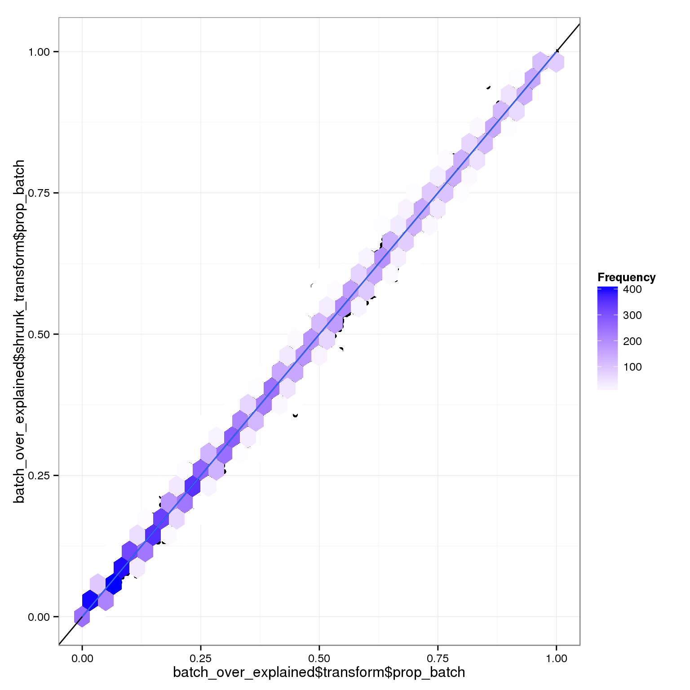
The relative variance coming from batch or individual is very similar with or without the transformation. However, the raw data is pretty different:
qplot(batch_over_explained$raw$prop_batch,batch_over_explained$shrunk_transform$prop_batch) + stat_binhex() +scale_fill_gradientn(colours=c("white","blue"),name = "Frequency",na.value=NA) + geom_abline(intercept=0,slope=1) + stat_smooth(method="lm")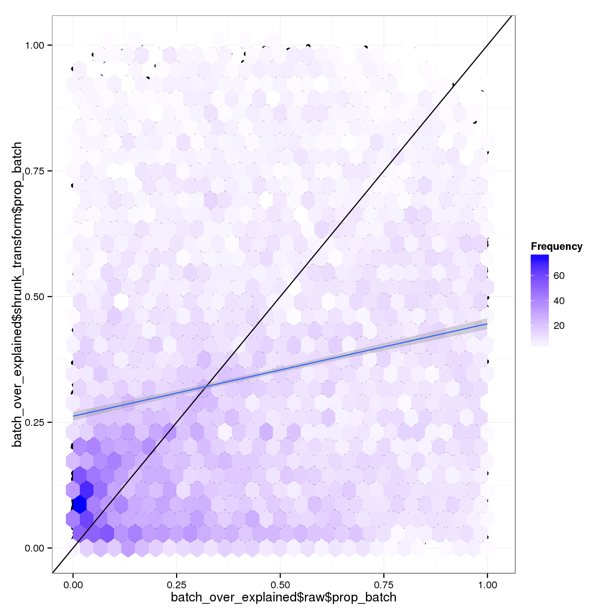
It’s easier to look at a histogram of the proportion explained by batch.
ggplot( do.call(rbind,batch_over_explained), aes(prop_batch,col=method, fill=method)) + geom_histogram(alpha=0.2, position="identity") + xlab("variance_batch / (variance_batch + variance_individual)")stat_bin: binwidth defaulted to range/30. Use 'binwidth = x' to adjust this.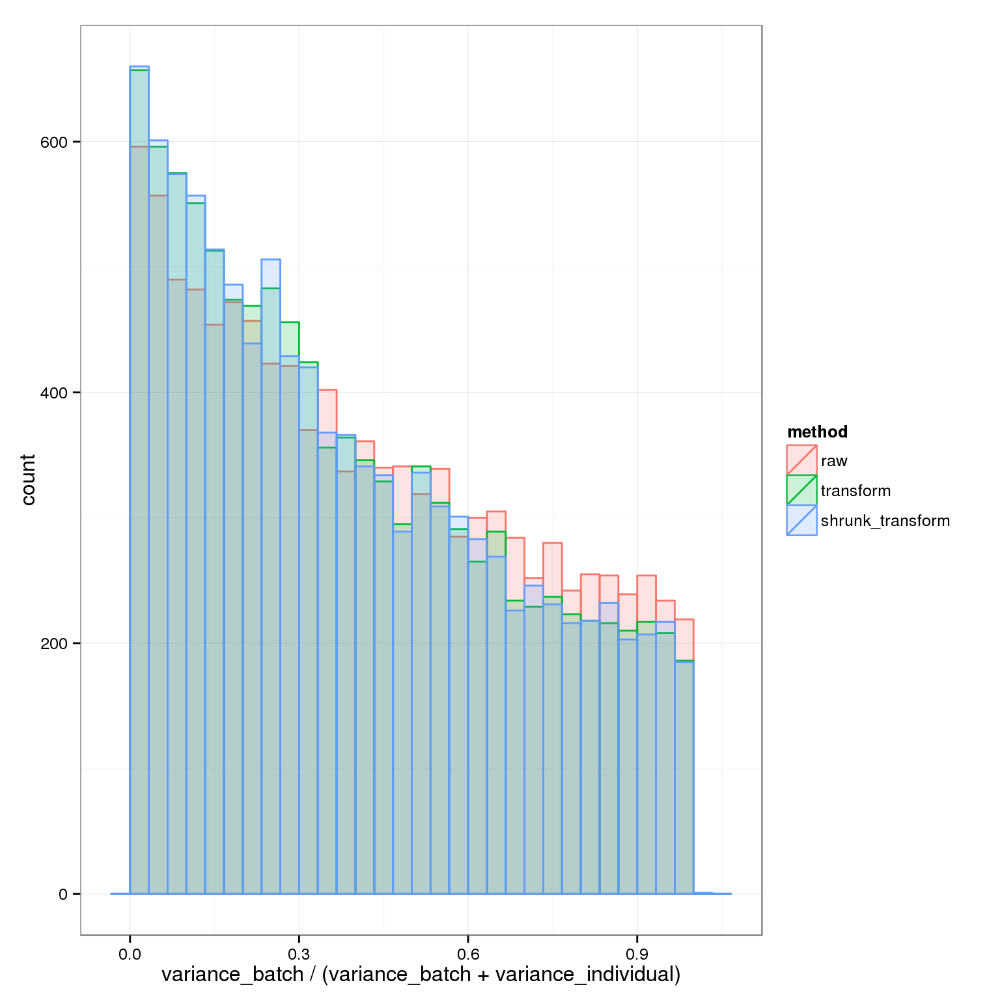 This clearly shows the advantage of the transformations: a higher proportion of the explainable variance is due to individual rather than batch.
The main difference between the two transforms is how much variance ends up in the residual: more without the shrinkage.
qplot(1-variance_components$transform$residual,1-variance_components$shrunk_transform$residual) + geom_abline(intercept=0,slope=1) + stat_smooth(method="lm") + xlab("proportion variance explained (transformed data)") + ylab("proportion variance explained (shrunk transform)")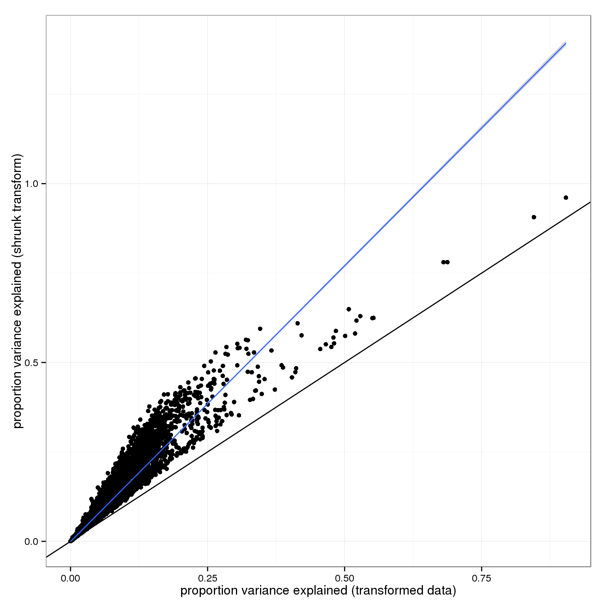
Comparing the raw and two transforms we see the residual variances are raw > transform > shrunk_transform.
ggplot( do.call(rbind,variance_components), aes(1-residual,col=method)) + geom_density() + xlab("proportion variance explained") + xlim(0,.5)+ scale_colour_manual(values=cbPalette)Warning: Removed 25 rows containing non-finite values (stat_density).Warning: Removed 15 rows containing non-finite values (stat_density).Warning: Removed 25 rows containing non-finite values (stat_density).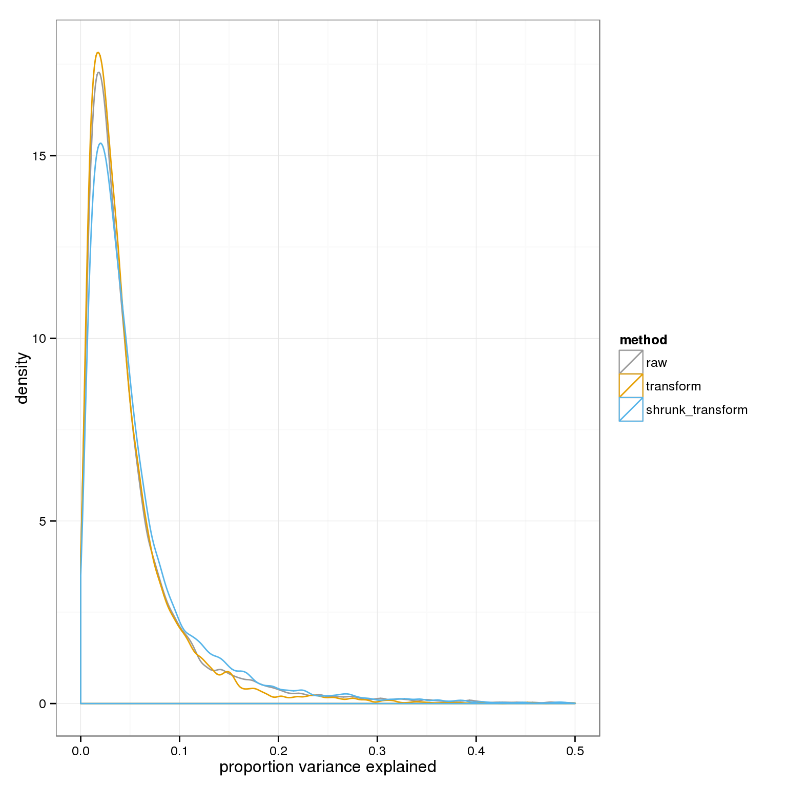
Including shrinkage makes the batch effect look stronger, but this is really because without including shrinkage the residual variance is higher
qplot(-log10(anova_pvals$transform$batch), -log10(anova_pvals$shrunk_transform$batch)) + geom_point() + geom_abline(intercept=0,slope=1) + stat_smooth() geom_smooth: method="auto" and size of largest group is >=1000, so using gam with formula: y ~ s(x, bs = "cs"). Use 'method = x' to change the smoothing method.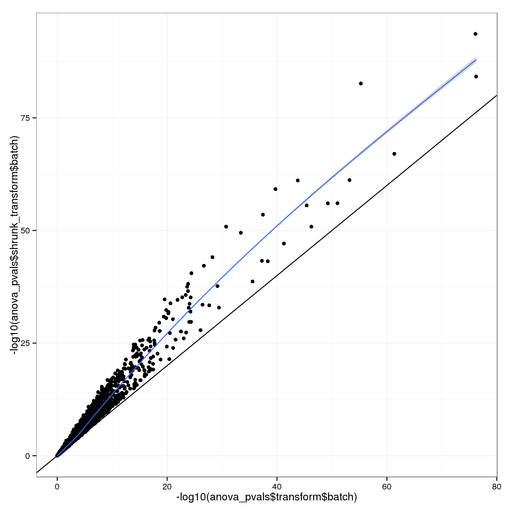
…and shrinkage therefore also makes the individual effect look stronger.
qplot(-log10(anova_pvals$transform$individual), -log10(anova_pvals$shrunk_transform$individual)) + geom_point() + geom_abline(intercept=0,slope=1)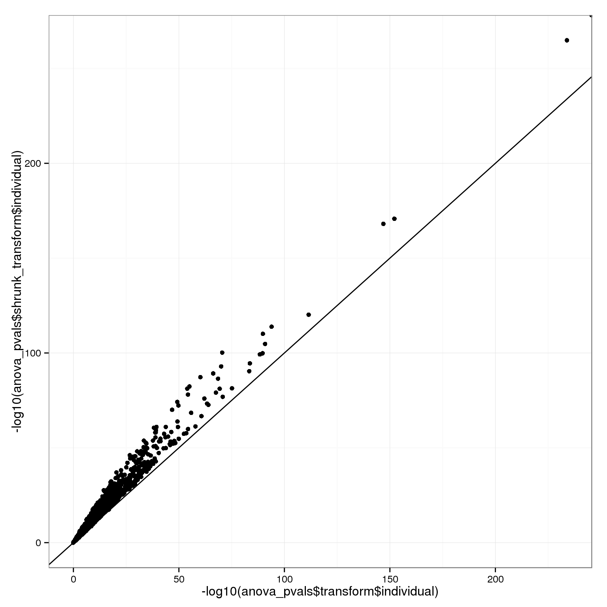
We can also look at this relative to the raw data, for batch:
batch_p_all=rbind(data.frame(x=-log10(anova_pvals$raw$batch),y=-log10(anova_pvals$transform$batch),shrinkage=F),data.frame(x=-log10(anova_pvals$raw$batch),y=-log10(anova_pvals$shrunk_transform$batch),shrinkage=T))
ggplot( batch_p_all[sample.int(nrow(batch_p_all)),], aes(x,y,col=shrinkage)) + geom_point() + geom_abline(intercept=0,slope=1) + theme_bw(base_size = 16) + xlab("-log10(p) for batch effect (raw cpm)") + ylab("-log10(p) for batch effect (transformed cpm)")+ scale_colour_manual(values=cbPalette)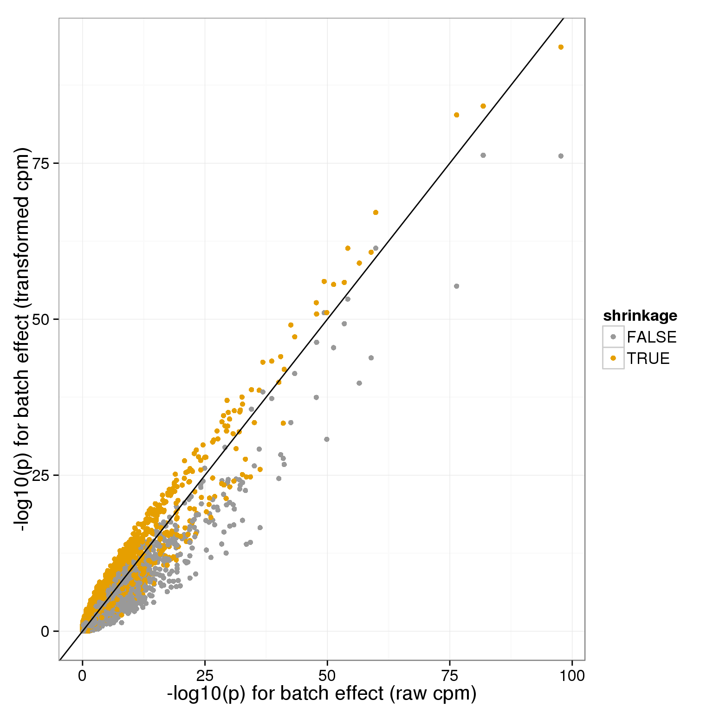
and for individual:
individual_pvals_all=rbind(data.frame(x=-log10(anova_pvals$raw$individual),y=-log10(anova_pvals$transform$individual),shrinkage=F),data.frame(x=-log10(anova_pvals$raw$individual),y=-log10(anova_pvals$shrunk_transform$individual),shrinkage=T))
ggplot( individual_pvals_all[sample.int(nrow(individual_pvals_all)),], aes(x,y,col=shrinkage)) + geom_point() + geom_abline(intercept=0,slope=1) + theme_bw(base_size = 16) + xlab("-log10(p) for individual effect (raw cpm)") + ylab("-log10(p) for individual effect (transformed cpm)")+ scale_colour_manual(values=cbPalette)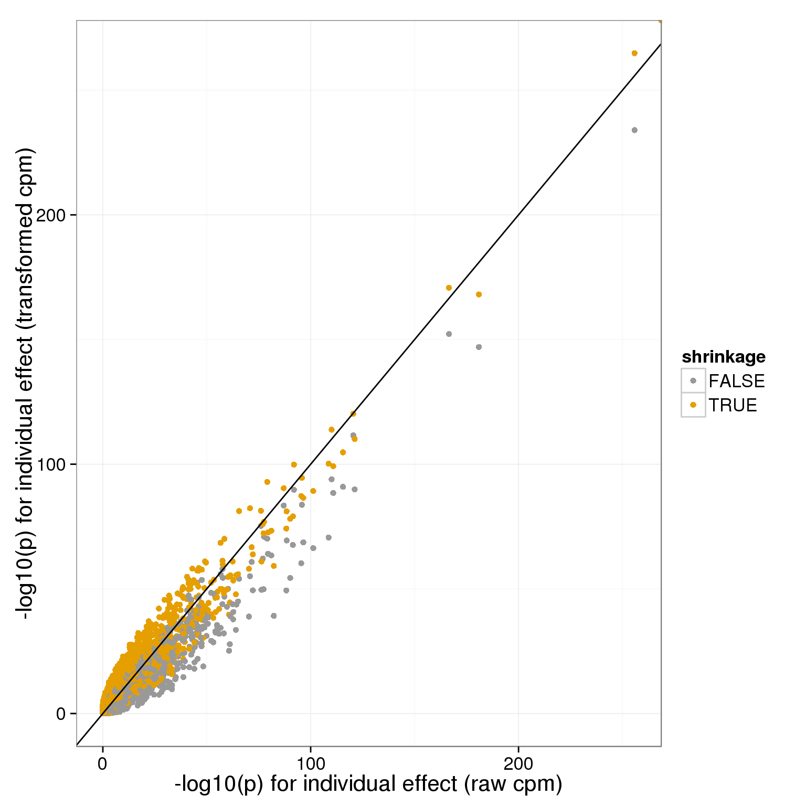
Session information
sessionInfo()R version 3.2.0 (2015-04-16)
Platform: x86_64-unknown-linux-gnu (64-bit)
locale:
[1] LC_CTYPE=en_US.UTF-8 LC_NUMERIC=C
[3] LC_TIME=en_US.UTF-8 LC_COLLATE=en_US.UTF-8
[5] LC_MONETARY=en_US.UTF-8 LC_MESSAGES=en_US.UTF-8
[7] LC_PAPER=en_US.UTF-8 LC_NAME=C
[9] LC_ADDRESS=C LC_TELEPHONE=C
[11] LC_MEASUREMENT=en_US.UTF-8 LC_IDENTIFICATION=C
attached base packages:
[1] parallel grid stats graphics grDevices utils datasets
[8] methods base
other attached packages:
[1] mgcv_1.8-6 nlme_3.1-120 testit_0.4 hexbin_1.27.0
[5] doMC_1.3.4 iterators_1.0.7 foreach_1.4.2 rstan_2.8.0
[9] Rcpp_0.12.0 ggplot2_1.0.1 edgeR_3.10.2 limma_3.24.9
[13] dplyr_0.4.2 data.table_1.9.4 biomaRt_2.24.0 knitr_1.10.5
[17] rmarkdown_0.6.1
loaded via a namespace (and not attached):
[1] compiler_3.2.0 formatR_1.2 GenomeInfoDb_1.4.0
[4] plyr_1.8.3 bitops_1.0-6 tools_3.2.0
[7] digest_0.6.8 lattice_0.20-31 RSQLite_1.0.0
[10] evaluate_0.7 gtable_0.1.2 Matrix_1.2-1
[13] DBI_0.3.1 yaml_2.1.13 proto_0.3-10
[16] gridExtra_2.0.0 httr_0.6.1 stringr_1.0.0
[19] S4Vectors_0.6.0 IRanges_2.2.4 stats4_3.2.0
[22] inline_0.3.14 Biobase_2.28.0 R6_2.1.1
[25] AnnotationDbi_1.30.1 XML_3.98-1.2 reshape2_1.4.1
[28] magrittr_1.5 codetools_0.2-11 scales_0.2.4
[31] htmltools_0.2.6 BiocGenerics_0.14.0 MASS_7.3-40
[34] assertthat_0.1 colorspace_1.2-6 labeling_0.3
[37] stringi_0.4-1 lazyeval_0.1.10 RCurl_1.95-4.6
[40] munsell_0.4.2 chron_2.3-45